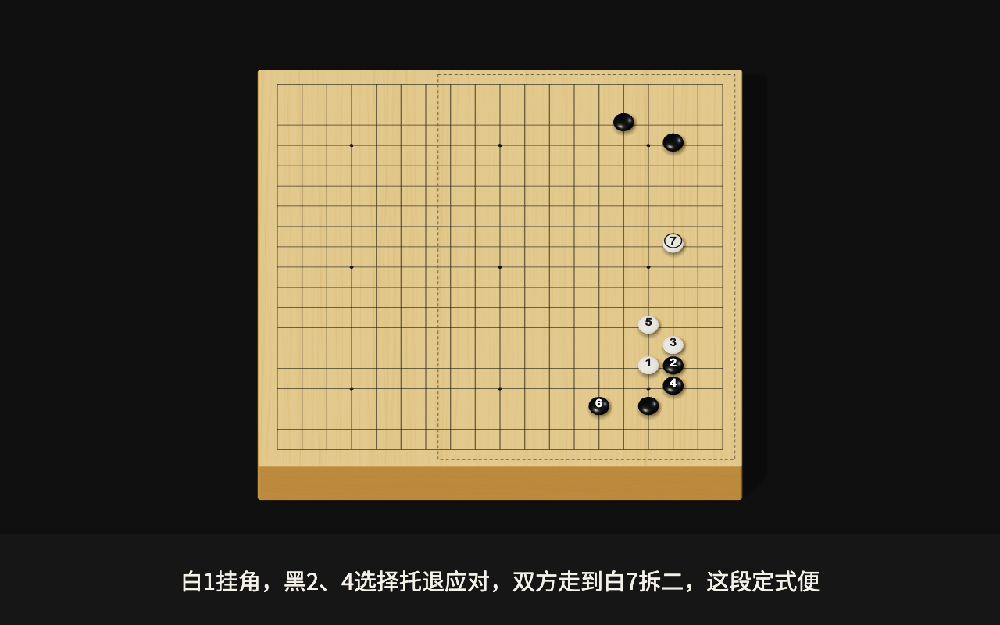
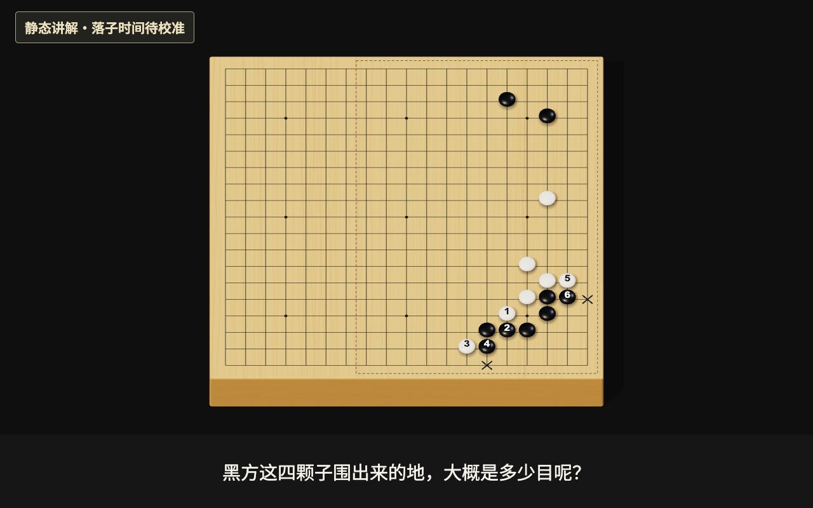

实木 3D · 最新修正 35° 居中视角 · 数字与棋面同倾角
倒角实体木板向下加厚，顶面、侧面及端面分别呈现木纹；棋子采用柔和高光。数字、字母、图形和末手圈按真实相机与棋子顶面投影，原图范围保持细虚线且不遮灰。1030 前侧面厚度投影约 45 像素，左右边角到画面中线的距离相等。





真实 1030 / 1031 数据，复用已验证的 replay_frames 与已保存语音时间信息。每张原图均为 1280 × 800。只采集静态画面，未生成语音或 MP4，未写数据库或部署。
1030 的新 2D / 3D 两张画面已更新为无灰遮挡版本，原图范围仅以细虚线标出。新 2D 使用正交相机、柔和棋子高光与接触阴影。旧 2D、1031 和并排/差异图保留为历史参考；点击图片查看原尺寸。
倒角实体木板向下加厚，顶面、侧面及端面分别呈现木纹；棋子采用柔和高光。数字、字母、图形和末手圈按真实相机与棋子顶面投影，原图范围保持细虚线且不遮灰。1030 前侧面厚度投影约 45 像素，左右边角到画面中线的距离相等。

